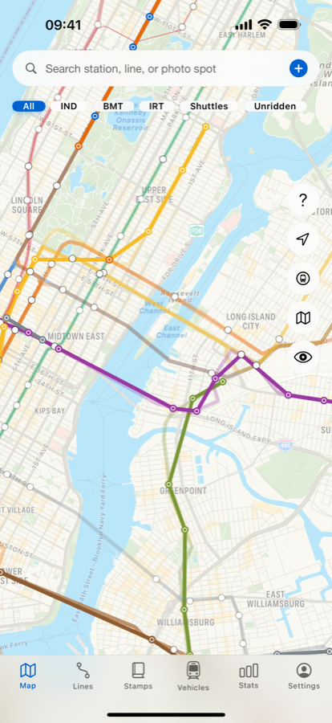
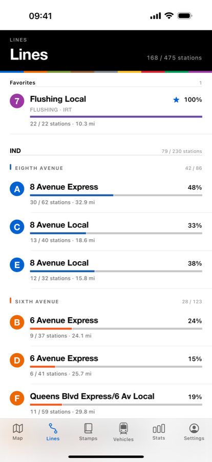
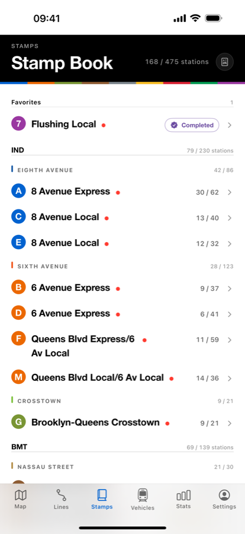

역을 체크하면 노선이 실제 노선색으로 칠해집니다. 예전에 탄 기록도 날짜를 골라 넣을 수 있습니다.

체크인도 GPS 추적도 없습니다. 승강장에서든 한 달 뒤든 원할 때 기록하세요.
역마다 한 번 누르거나, 출발·도착역을 정해 그 사이를 한 번에 넣습니다.
실제 선로 위에 노선색이 칠해집니다. 한 노선을 끝까지 타면 완주 카드가 나옵니다.
노선색·역명·선로 형상 모두 MTA 가 공개하는 GTFS 피드에서 그대로 가져왔습니다. 역 전광판을 움직이는 것과 같은 데이터입니다.


실제 지도와, 지하철만 남기고 전부 걷어낸 노선망 뷰.
어디를 실제로 다녔고 어디를 안 갔는지 보여주는 히트맵.
한 노선을 끝까지 타면 그 노선이 그려진 카드를 받습니다.
역 방문마다 붙일 수 있습니다. 사진은 기기 안에만 남습니다.
R32 브라이트라이너부터 R211 까지. 탄 것과 본 것을 기록합니다.
전 사용자 무료. 기기를 바꿔도 기록이 남습니다.